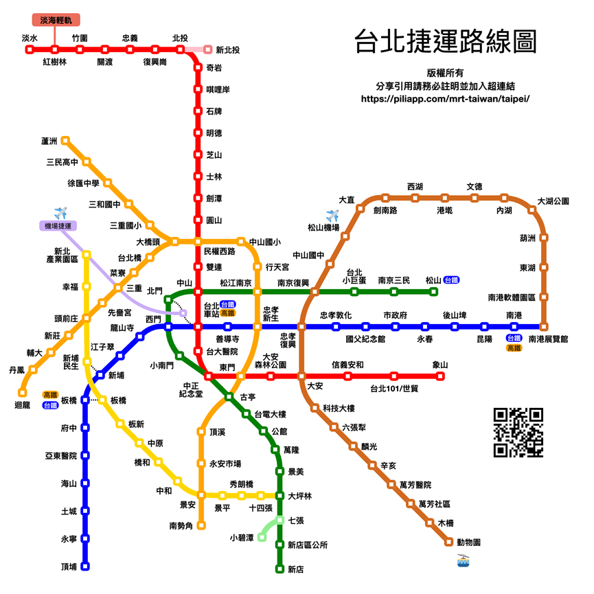
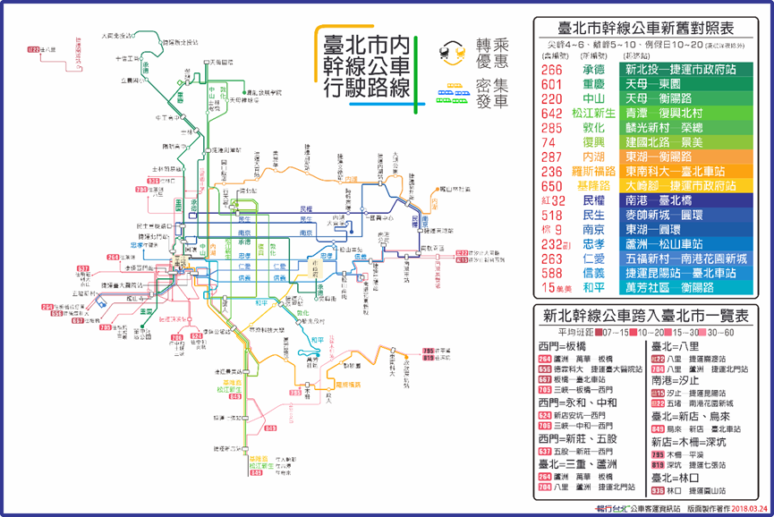
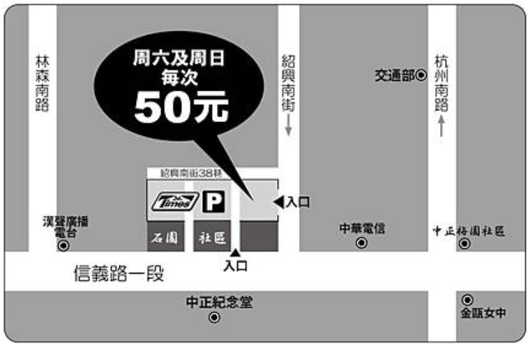

| 搭乘捷運淡水線或松山新店線至中正紀念堂3號出口，步行約5分鐘即可到達 搭乘新蘆線至東門站3號出口，步行約8分鐘即可到達 |  |
|
愛國東路：248、644、648 羅斯福路：15、18、208、236、236夜、251、252、660 中山南路：18、227、648、中山幹線 信義路：0東、20、22、204、670、1503、信義幹線、信義新幹線 仁愛路：15、22、37、208、208直、245、261、263、270、 295、297、621、630、651、665、671 杭州南路：38、237、253、297 |
 |
|
地下停車場約可容納695部小客車(含14個身心障礙者專用車位)，車輛可由信義路或愛國東路進出(限高2公尺)。 票卡若遺失，請至停車場管理室，出示行車執照及身份證明，繳付當日零時起計費之停車費及票卡遺失工本費100元。 若為隔夜停車，則依停車場隔夜車記錄表的入車當日淩晨零時開始計費。 開放時間：24小時營業。 一般收費：平日第一小時40元，逾第一小時者，每半小時收費20元； 星期五晚上5點至9點及例假日、國定假日上午9點到晚上9點，第一小時50元，逾第一小時者，每半小時收費25元。 |
 |